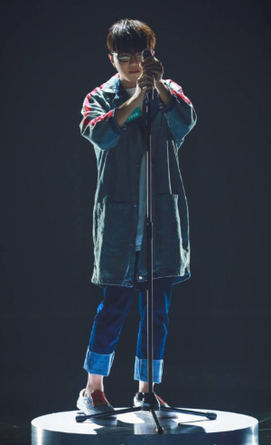

毛不易出生于齐齐哈尔市泰来县。原名王维家，艺名毛不易，意为平凡、不改变。他大学就读于杭州师范大学护理专业，在校期间，他还参加了校园十佳歌手的比赛，并担任了杭州师范大学理学院“百万音镑”十佳歌手决赛评委。 2016年，他进入杭州地方医院实习，成为一名实习男护士；同年，他开始提笔写歌，并萌生了自学吉他的想法，他所创作的第一首歌曲是为出嫁的姐姐而写的。


2017年6月17日，因为紧张，喝了酒的毛不易第一次在节目中唱了《如果有一天我变得很有钱》。“如果有一天我变得很有钱，我会买下所有难得一见的笑脸，让所有可怜的孩子不再胆怯，所有邪恶的人不再掌握话语权”，让薛之谦眼前一亮。
2017年7月29日，一首《消愁》让很多人认识了毛不易。“一杯敬故乡，一杯敬远方，守着我的善良，催着我成长，所以南北的路从此不再漫长，灵魂不再无处安放”。
一首《盛夏》回顾了这个夏天，结束了这个节目。毫无疑问，毛不易是冠军。“就回来吧，回来吧，。。。。。。。。。。。。。。。。。。。。。。。。。。。。。。。。。。。。。。。。。。。。”。